LISI Days'1
À propos de LISI Days'1
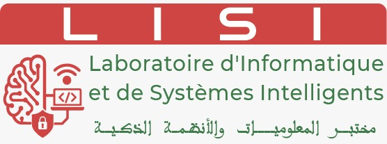
Une journée dédiée à la valorisation de la recherche scientifique du laboratoire LISI
Cette journée est dédiée à la présentation des avancées scientifiques des doctorants du laboratoire LISI (Laboratoire d’Informatique et de Systèmes Intelligents). En parallèle, cette journée offre une plateforme pour les étudiants de Master qui doivent participer avec leurs projets pratiques novateurs et contribuer à l'écosystème scientifique du laboratoire.
LISI en bref :
• 34 professeurs
• 150 publications scientifiques dans des revues indexées Scopus et/ou Web of Science
• 75 doctorants en cours
• 7 soutenances en moyenne par an
• 20 projets de recherche actifs
• 10 collaborations internationales
Le LISI est un laboratoire de recherche dynamique en informatique et systèmes intelligents, contribuant activement à l'innovation scientifique et au rayonnement international.
Keynotes
Découvrez les intervenants principaux et les thématiques des keynotes de la LISI Days'1
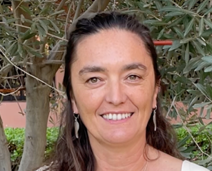
Evaluation de la protection juridique des océans à l'aide de l'IA : projet NAWRAS
Dr. Marie BONNIN
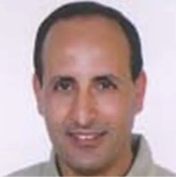
La transformation digitale dans l'industrie minière
Pr. El Hassan ABDELWAHED

Leveraging AI for Sustainable Marine Ecosystems
Pr. Jihad ZAHIR
Calcul parallèle et HPC: Cas du cluster Toubkal
Pr. Imad KISSAMI
Doctorants
Découvrez les doctorants et leurs sujets de recherche présentés durant la LISI Days'1
Deep Learning in Material Design for Efficient Batteries
EL FAQAR Abdessabour Chakir
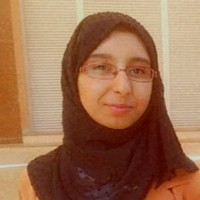
PINN-Based Digital Twin for Autonomous Vehicles with Sensor Integration and Web Platform
MESSAOUDI Salma

Deep learning and language models for anticancer drug design
M'RHAR Kaoutar
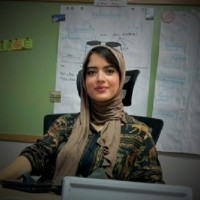
Système d'intelligence artificielle pour la surveillance, la prédiction et l'aide à la décision utilisant l'analyse du Big Data...
RAFIQ Imane
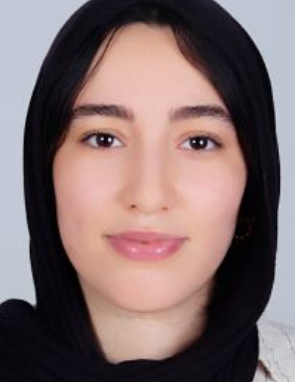
Large Models Acceleration Techniques
AIT MOHAMED Firdaous
Développement d'un modèle hybride Deep Learning – RL pour le diagnostic médical et la personnalisation des traitements
MORAKIB Marouan
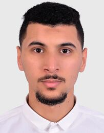
LLM-Based Agents
KHAYOUB Ismail
Apprentissage automatique par renforcement hybridé appliqué à la classification et l'optimisation intelligente des flux énergétiques
TARGUOAUI Mouad
AI-Based Structural Health Monitoring for Civil Infrastructure Diagnosis and Safety
Hafsa MATICH
Communication V2X
RHESDAOUI Meryem
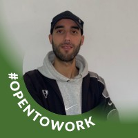
Artificial intelligence and agriculture
ARSALANE Moad
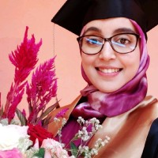
Deep learning and machine learning to avoid congestion in vehicle networks
OUHMIDOU Hajar
LLM pour la conception de nouveaux médicaments : de la description de la maladie à la molécule
MEKIANI Leila
AegisFlow
OUBELOUAH Oumaima
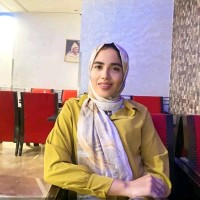
Application of Artificial Intelligence and Robotics in Agriculture
AIT HAMMOU Najia
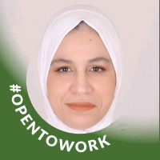
Overview of intelligent systems for deepfake detection in social media content
EL HABIB Oumaima
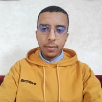
Audio intelligence for local languages
FADILI Aymane
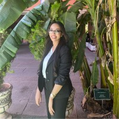
Intégration des modèles d'IA et d'otolithes DEB pour une meilleure estimation de l'âge et de la croissance des poissons
MALAINE Mariem
Identifying Influential Nodes in Complex Networks Using Machine Learning
FARAH Raja
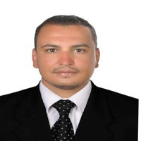
Sentiment analysis within the Moroccan parliamentary context, specifically focusing on questions directed by deputies to the government
ELMANSOURI Abdelhalim
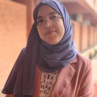
SIGIRO: An information system for intelligent water resource management
BABA Naima
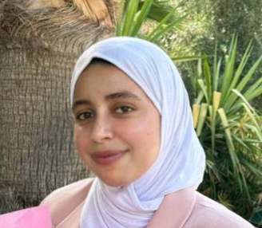
Reinforcement Learning for Stock Market Returns Forecasting using Multi-Objective Optimization
CHATAOUI Nouhayla
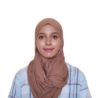
Apports des méthodes de reconnaissance automatique du langage pour la recherche de données...
JABIR Somaya
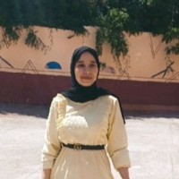
Enabling Federated Learning On the Edge for Enhanced Privacy in Medical Imaging
LHASNAOUI Chaima
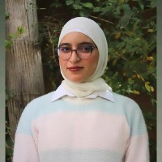
Vers une approche d'analyse spatio-temporelle des comportements de conduite à grande échelle basé sur l'IA
LECHHAB Hind
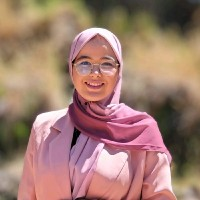
Federated Fine-Tuning of Large Language Models for Domain-Specific Applications: Balancing Personalization and Privacy
AIT BAALI Fatiha
Deep multimodal learning and continuous learning for fault prognosis and real-time supervision and monitoring of nuclear
BOUDOUAR Youssef
Smart-biochar
KNIDIRI Dounia
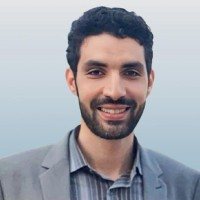
Market World Model
ELMAJDOUBI Mousaab
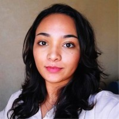
Diagnostic de la fatigue et inattention
EL MESTEM Oumayma
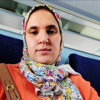
Les antennes fractales
ATTIOUI Sanae
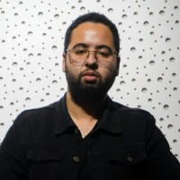
Avancement de l'article de revue
KASSIMI M'bark
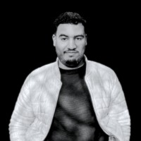
Identification des coraux dans les collections d'images numériques...
OUASSINE Younes
L'intégration du blockchain et de l'IA dans le renforcement de la cybersecurity dans les smart cities
LAZGHAM Loubna

TinyML-based for agricultural IoT devices
AITIBOUREK Lahcen
Traitement et indexation des vidéos à l'aide de l'IA
AIT EZOUINE Elhoussine
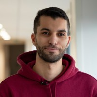
Traitement automatisé de l'information juridique pour la protection de l'environnement marin
AL MOUATAMID Youssef
Combinaison de modèles d'apprentissage profond pour la classification multiclasse d'images médicales
ALHYANE Rachid
Intelligent Tutoring System in Education 4.0
LAFHAM Mohamed
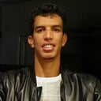
Étude et proposition de modèles neuronales pour la reconnaissance et la classification des documents et images
EL KHARRACHI Khayya
Modeling Spatio-Temporal and Social Dynamics of Marine Animals with Artificial Intelligence
CHAFIA Ibtissam
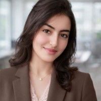
État d'avancement thèse
AOMARI Nisrine
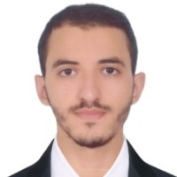
Graph Neural Networks for Educational Applications
CHETOUI Ismail
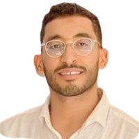
Adaptive Multi-Modal Transformer Fusion for Multi-person Tracking Under Variable Scene Density
LACHIHAB Oussama
Using IA for Cyberattack Detection and Prevention
Hanane Moufid
Compétitions et Activités
Découvrez les différentes compétitions et activités proposées durant la LISI Days'1
Exposés scientifiques
Concours de présentations des meilleurs doctorants.
Échange entre communauté
Un espace pour interagir, échanger des idées et renforcer les liens au sein de la communauté scientifique.
Concours de posters
Concours récompensant le meilleur poster scientifique.
Concours de projets
Compétition pour élire le meilleur projet innovant.
Comité
Les personnes qui contribuent à la réussite de la LISI Days'1
Comité Général

El Hassan El Moudden
Doyen de la FSSM
Essaid El Bachari
Prof et Directeur du laboratoire LISI

Naaila OUAZZANI
Vice Doyen à la FSSM
Comité d'Organisation et de Programme

Pr. Mohamed-Amine CHADI
Professeur à la FSSM

Pr. Mohammed AMEKSA
Professeur à la FSSM
Pr. Abdelouafi IKIDID
Professeur à la FSSM
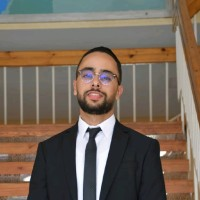
Pr. Ilyass OUAZZANI TAYBI
Professeur à la FSSM
Fatiha AIT BAALI
Doctorante
Ismail KHAYOUB
Doctorant
Firdaous AIT MOHAMED
Doctorante
Salma MESSAOUDI
Doctorante
Hanane MOUFID
Doctorante
Mohamed LAFHAM
Doctorant
Hafsa MATICH
Doctorante
Najia AIT HAMMOU
Doctorante
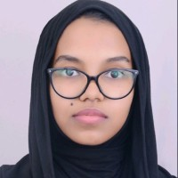
Asma OIRGARI
Doctorante
Aymane FADILI
Doctorant
Comité d'évaluation : Master/poster
Pr. Ikidid Abdelouafi
Professeur à la FSSM

Pr. Afoudi Yassine
Professeur à la FSSM
Comité d'évaluation des présentations (PhD)
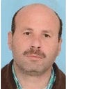
Pr. Ahmed EL OIRRAK
Professeur à la FSSM
Pr. Mohamed-Amine Chadi
Professeur à la FSSM
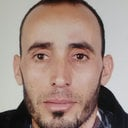
Pr. Khalid AZNAG
Professeur à la FSSM
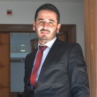
Pr. Fahd Kalloubi
Professeur à la FSSM
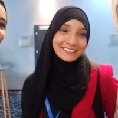
Pr. Latifa ER-RAJY
Professeur à la FSSM

Pr. Mariya Ouaissa
Professeur à la FSSM
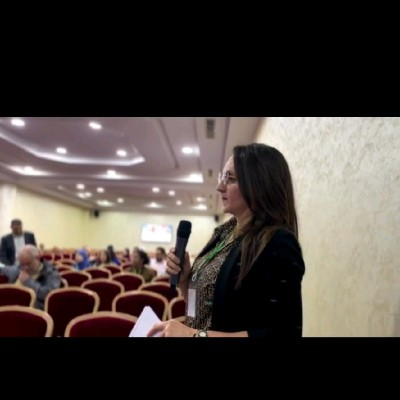
Pr. Meryeme Hadni
Professeur à la FSSM
Pr. Essaid EL BACHARI
Professeur à la FSSM
Pr. Moulay ahmed EL KIRAM
Professeur à la FSSM
Pr. El Hassan ABDELWAHED
Professeur à la FSSM

Pr. Hasna EL ALAOUI EL ABDALLAOUI
Professeur à la FSSM
Pr. Ilyass OUAZZANI TAYBI
Professeur à la FSSM
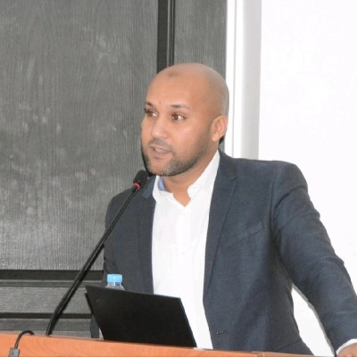
Pr. Mustapha AATILA
Professeur à la FSSM
Pr. Jihad ZAHIR
Professeur à la FSSM
Clubs partners

IT Club
Club Informatique

Chess Club FSSM
Club des Échecs

RAIC
Club de Robotique
et Intelligence Artificielle
Contact
Pour toute question, veuillez nous envoyer un message via ce formulaire :